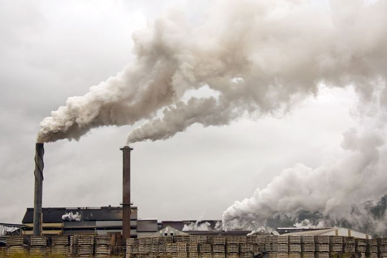

Chinese Environmental Policies
Photo Source: Sohu.com
As the second largest economy of the world and a leading player in the transition to sustainable development, China's environmental and energy policies are vital to understanding the balance between economic growth and environmental sustainability in developing countries. Tracking the country's decade-long implementations of various environmental and energy policies, I work on a series of research studying the long-run environmental and socio-economic impacts of Chinese policies.
On environmental policy, I analyze one of the country's earliest and most controversial policies, the long-run road rationing. My published paper "The Effect of the End-Number License Plate Driving Restriction on Reducing Air Pollution in China", finds that this policy, designed partially to reduce air pollution in 9 major cities by restricting approximately 20% of cars on roads by their plate numbers during weekdays, has close-to-zero average impacts on air pollution. Using difference-in-difference, regression discontinuity and synthetic control regression analysis, heterogeneous policy impacts are found across different policy cities where air quality improvement is seen when road rationing is combined with private car purchase restrictions. This study highlights the trade-offs between command-and-control policies and market-based solutions. As a result, I provide estimates and policy implications of subsidizing cleaner electric vehicles to counter the behavioral responses of increasing car purchases related to road rationing.
On energy policy, my works include examining the contribution of coal plants to air pollution. Constructing treatment and control air monitoring stations with respect to distance and production impact factors of nearby coal plants, we apply difference-in-difference analysis with the quasi-experimental design of 2020 COVID lockdown. We discover significant pollution reductions near coal plants during the lockdown, providing evidence of their ongoing impact despite recent regulations and suggesting further policy interventions. I also participate in research using a dynamic Sankey diagram to analyze the evolution of China's energy supply and demand over the past few decades. Additionally, my co-authored work uses a Markov-chain model to predict future energy consumption and substitution in Beijing.
Lastly, my research on industrial policy focuses on the central environmental inspection system in China. Our working paper "Breaking the Norms: The Environmental and Economic Impacts of Central Environmental Inspections under Local Government-Corporate Collusion in China" analyzes air pollution, corporation profitability, and firm entry decisions changes across the rolling central inspections since 2016 under different characteristics of the local political leaders. We find that the central inspection improves the efficiency of existing environmental monitoring and industrial pollution regulations through breaking possible prior collusion between local officials and corporations. Supported by certain evidence showing increased information transparency and attention regarding local environmental issues, we argue that the society gains from improved environmental regulation executions, at the trade-offs of decreased corporation profitability and deterred market entrance of firms especially from high polluting industries. This study outlines the political factors in environmental policy implementations, and quantifies the economic-environment trade-offs between changing incentives in the principal-agent problem of central-local governments of China.